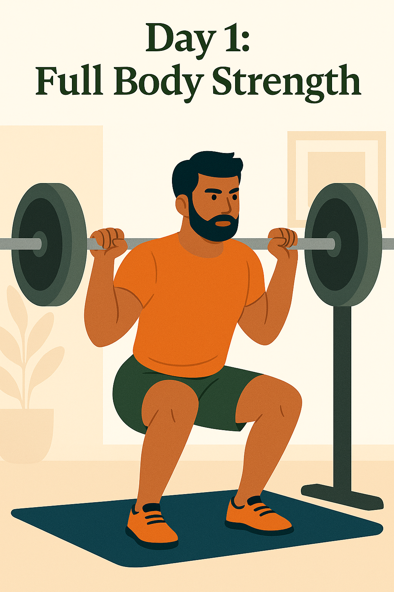
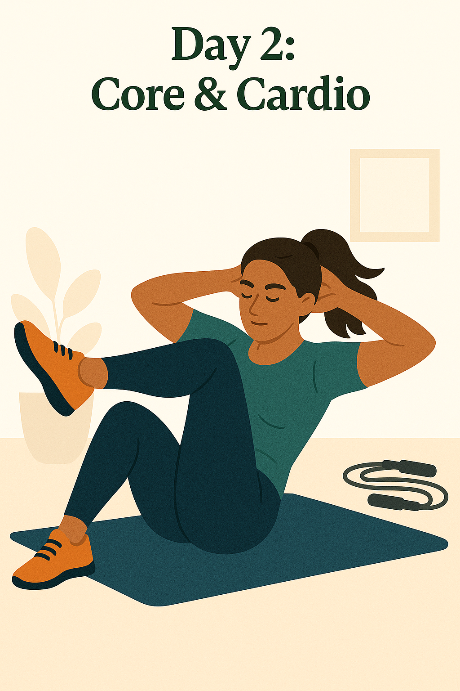
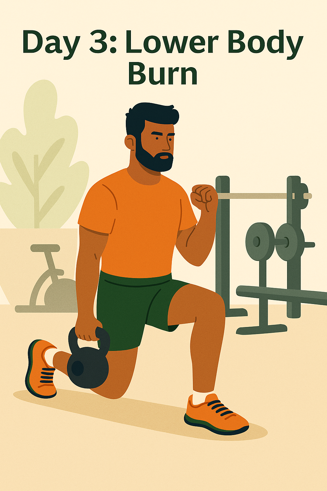
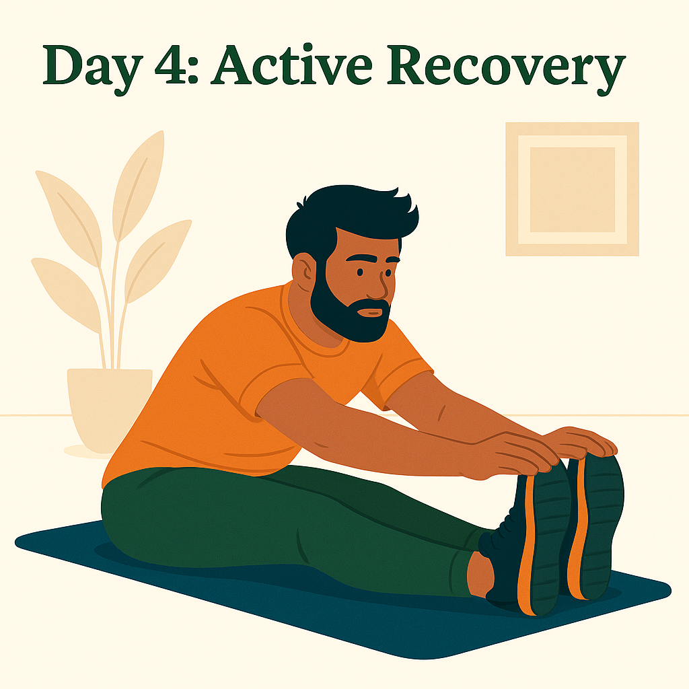

Weekly Workout Routine

Day 1: Full Body Strength
- Squats – 4 sets of 10 reps
- Push-ups – 3 sets of 15 reps
- Deadlifts (Bodyweight or Dumbbell) – 3 sets of 10 reps
- Overhead Press – 3 sets of 10 reps
- Plank – 3 sets of 30 seconds

Day 2: Core & Cardio
- Jumping Jacks – 3 sets of 1 minute
- Bicycle Crunches – 3 sets of 20 reps
- Mountain Climbers – 3 sets of 30 seconds
- Russian Twists – 3 sets of 20 reps
- High Knees – 3 sets of 1 minute

Day 3: Lower Body Burn
- Walking Lunges – 3 sets of 20 reps
- Glute Bridges – 3 sets of 15 reps
- Step-ups – 3 sets of 10 reps per leg
- Wall Sit – 3 sets of 45 seconds
- Calf Raises – 3 sets of 20 reps

Day 4: Active Recovery
- Child’s Pose – 2 minutes
- Cat-Cow Stretch – 10 rounds
- Hamstring Stretch – 1 minute per leg
- Neck Rolls – 10 reps each direction
- Light Walk or Yoga Flow – 15–20 minutes